第一篇 基础篇 一、正则表达式概论----理解正则表达式 4 （一）正则表达式方案处理文本的基本思路 4 （二）正则表达式的基本组成单元-元字符(序列) 5 （三）用正则处理文本的一个例子 7 二.正则与VBA的交互-正则表达式的实现 8 1.定义变量代码段 9 2.目标文本字符串赋值代码段 9 3.创建正则对象代码段 9 4.设置对象的pattern属性 10 5.设置对象的其它属性 10 6.应用对象的方法代码段 12 三.正则元字符----字符表示法 20 (一) 对于一些常用的不可打印字符，规定了专用的元字符序列 20 (二) 普通字符组:肯定字符组[a-z]及否定字符组[^a-z] 21 (三) 字符组缩略表示法 21 (四) 几乎能匹配任何字符的元字符:英文句点 22 (五) 控制字符表示法:\cChar 22 (六) ASCII码表中字符的八进制转义表示法:\num 22 (七) ASCII码表中字符的十六进制转义表示法:\xnum 23 (八) Unicode码表中字符的十六进制转义表示法:\unum 23 (九) 元字符字面字符表示法:转义符”” 23 (十) 引用前面括号捕获的文本－－反向引用 24 四.正则元字符----字符(串)连续出现次数表示法 25 五.正则元字符--字符(串)位置表示法 27 (一) 单词分界符\b 28 (二) 非单词边界\B 29 (三) 肯定顺序环视与否定顺序环视 29
一、正则表达式概论----理解正则表达式
文本处理是一项常见的工作任务，比如：在一段文本或数据中,查找、替换、提取、验证、分离和删除等特定字符或字符串。在几乎所有文本编辑器中（如word/excel/VBE等）都提供了字符串的查找/替换功能；在编程语言的世界里更是提供了丰富的字符处理函数和方法。VBA中有Find（查找某字符串）、Replace（用一字符串去替换文本中的另一字符串）、LIke（判断某字符串是否存在）等等。
编程语言本身提供的字符处理函数或方法，具有用法简单、处理快速和使用便捷的特点。不过这些函数或方法也存在很大缺陷：它们通常都是对非常具体的字面文字进行操作，假如要处理某一类具有某些相似特征的字符或字符串，就显得力不从心了。举个例子，要求在一大段文本中，查找所有的符合规范的电子邮箱。如果用VBA本身提供的字符处理函数来处理，显然不是一件容易的事。可见，在现实的世界里对复杂动态文本的处理，仅靠编程语言本身是不够的。为此，人们找到了一种功能更为强大的文本处理解决方案----正则表达式方案。
正则表达式是强大、便捷、高效的文本处理工具。利用它使用者可以描述和分析任何复杂的文本，配合编程语言或文本编辑器提供的支持，正则表达式能够查找、替换、提取、验证、添加、删除、分离和修整各种类型的文本和数据。当今主流编程语言（如：java/C#/C++/.net/php/pcre/perl等）几乎都提供了对正则表达式的支持；有些文本编辑器（如Dreamweaver）在编辑查找框中也可直接输入正则表达式，实现不限于字面文字的搜索与替换．VBA虽然只是对正则提供简单支持，但是它也可以完成一些用VBA函数或方法难以处理的文本处理任务。
（一）正则表达式方案处理文本的基本思路
1、显然,无论进行何种文本处理操作,首先要在目标文本中找出指定的字符串,而要查找它们必须得描述出该字符串的特征。比如，你要验证用户输入的是否是一个正确的电子邮箱，肯定不可能去枚举世界上所有存在的电子邮箱,因而首先得依据电子邮箱规范,建立一个电子邮箱的模式,然后比照该模式到文本中去查找验证,从而判断目标文本中是否存在与模式相吻合的字符串(这个过程也称之匹配过程,查找到的结果叫”匹配”)。一个简单的电子邮箱模式可以表示为：
^\S+@\S+$
这个代码模式就是电子邮箱的正则表达式，所以正则表达式是一种可以在许多现代应用程序和编程语言中使用的特殊形式的代码模式。编制这样的代码模式，也就是编制正确高效的正则表达式，是我们学习和研究正则表达式的主要任务。
2、如何将编制好的正则表达式应用于编程语言，实现我们真正的需要，这是学习和使用正则的第二个问题，在这一点上，不同的编程语言其实现方式是不一样的.庆幸的是,较之编制正则表达式,掌握它们是非常简单的事。我们会在本篇的第二章“正则与VBA的交互”中详细论述。
（二）正则表达式的基本组成单元—元字符(序列)
从电子邮箱的正则表达式(^\S+@\S+$)可以看到,正则表达式是由一些”特殊字符”组成的。人们常常把这些组成正则表达式的”特殊字符”称之为元字符。元字符是正则表达式事先规定或约定的，用来表示字符、位置、数量和控制的专用符号。在组成正则表达式的元素中,有的是由两个或多个特殊字符组成一个单元，表示单一意义。如上面电子邮箱正则中,”\S”表示一个非不可见字符,我们可以称之为元字符序列.在正则表达式中也可以有字面字符，如邮箱正则的字符“@”,在这时表示的是字面上”@”.所以从形式上观察,正则表达式是由元字符、元字符序列或字面字符组成的，用于描述字符或字符串特征的一个代码模式.正则表达式也可以仅由字面字符组成,如”正则ABC”.
你是否有一种似曾相识的感觉?对!这不是什么新鲜的想法.远古的DOS时代,前辈门就曾用*号代表任意多个字符,用?号代表一个任意字符，那时称之为“通配符”;当下的VBA中Like函数的参数里有更多的特殊字符或结构,用来描述字符或字符串模式.不过,正则表达式里,那些”特殊字符”更多,语法规则更丰富,可以认为,它相当于是一门”微型”语言.
接下来,本章会把所有的”元字符（序列）”分类展示给你,不是要你立马记住或掌握它,目的是让你有个概貌,避免在以后的学习中迷失方向.
1.正则表达式规定了多种方法或符号用来表示世界各国使用的文字字符。如：
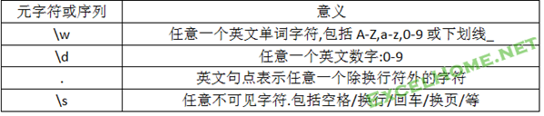
下面列举了VBA中正则表示字符的所有元字符(序列),在以后的章节中会详细介绍.
(1) 常用不可打印字符:\n、\t、\f、\r、\v
(2) 八进制转义：\num (num是一个八进制数)
(3) 十六进制转义:\xnum (num是一个十六进制数)
(4) Unicode转义:\unum (num是unicode代码点)
(5) 控制字符：\cchar (char是A-Z之间的任意字母)
(6) 普通字符组：[a-z]和[^a-z]
(7) 几乎能匹配任何字符的元字符:英文句点
(8) 字符组缩略表示法:\w、\d、\s、\W、\D、\S
2.表示字符或字符串数量(连续出现的次数)的元字符：*、?、+、{n}、{n,m} 例：
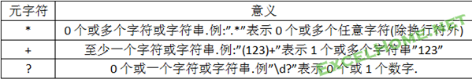
3.表示位置的元字符(序列)：^、$、\b、\B、(?=…)、(?!...)例：
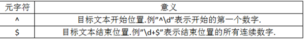
4.在正则表达式中起分组、捕获和控制作用的元字符(序列)：
(…)、(?:…)、\1、…|…|…、*?、+?、??、{num,num}?
例:
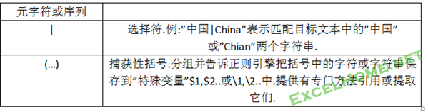
（三）用正则处理文本的一个例子
我们已经认识了几个简单的元字符(序列),并能用它们构建一些实用的正则表达式,那么,怎样把它们应用于VBA中呢？，下面我们用正则在VBA中来完成一个简单的任务：
目标文本:”正则表达式其实很简单 “
任务:删除目标文本中行尾空格.
分析:
1.\s可表示空格,+表示出现一个或多个字符,所以可用”\s+”表示连续多个空格.$表示一行的行尾，于是可用以下正则表达式描述行尾的若干空格:
\s+$
2.我们把上面的正则代码表达式作用于目标文本,查找与模式吻合的字符(串),并用空字符替换,从而达成实现删除空格任务。
下面是完整的VBA代码：
Sub Test()
Dim regx, S$, Strnew$
S = "正则表达式其实很简单 "
Set regx = CreateObject("vbscript.regexp")
regx.Pattern = "\s+$"
regx.Global = True
Strnew = regx.Replace(S, "")
MsgBox Strnew
End Sub
这个简单的例子说明了正则实现的一般步骤:
1、 创建变量：这个例子中，变量regx是一个对象,S是字符串变量;Strnew也是字符串变量.
2、 把目标文本赋值给变量S
3、 创建一个正则对象regx
4、 设置正则对象regx的pattern属性,即把正则表达式以字符串形式赋值给pattern.
5、 设置正则regx对象的其它属性,例子中设置Global属性为真
6、 应用对象提供的方法,实现相应功能.例子中,利用regx对象的Replace方法实现替换.
7、 输出处理后的字符串.
到这里,你已经完全了解了用正则处理文本的基本过程和思路,以及在VBA中使用正则的代码框架.以后的任务是全面掌握正则的所有元字符和它们的工作原理,另外还需要进一步了解正则对象的各种属性和方法.
要提醒的是,”基础篇”的应用实例或许并不是解决该任务的最佳方案,也或许是一些看似很无聊的例子,但请不要忽视它们.正是透过这些简单的实例,揭示了概念的本质.
二.正则与VBA的交互—正则表达式的实现
在继续学习正则元字符特性或编制自己的正则表达式时,常常需要对其测试.你可以用一些专门的正则测试工具(推荐RegxBuddy);也可以自己编制VBA代码进行测试。不过建议初学者，经常编写VBA代码进行测试，这样可以提高今后实际应用正则的能力。所以，在进一步学习正则元字符特性之前，我们先介绍正则与VBA的交互的相关知识。你可以快速阅读或越过本章内容，在以后具体应用时，再经常回头查阅。当然也可以用上一章学到的知识详细研究本章内容,在以后的学习中专注于正则表达式本身.
用正则处理文本，是通过正则表达式与程序设计语言的交互来实现的。其交互方式在不同编程语言中分为三大类：
一是集成式。Perl语言本身内建正则操作符，可以直接作用于正则表达式.操作符作用于正则表达式就像数学的+-号作用于数字一样.不需要构建正则对象。例如:任务是要把变量$text保存的文本中的空行替换为标签（<P>）。
正则表达式
^$ 表示空行.
在Perl语言中,可以用一句代码实现替换：$text=~ s/^$/<p>/g
二是函数式处理。Java等语言,为正则处理提供了一些便捷函数,以节省工作量.用户不需要首先创建一个正则对象,而是用静态函数提的临时对象来完成正则处理,处理完后把临时对象抛弃. 正则表达式对于函数相当于一个参数, 这种方式的优点是”随手”可用,但不适宜在对时间要求很高的循环中使用.所以java也提供了下面讲到的面向对象的程序式处理.
三是面向对象的程序式处理。这是大多数编程语言的正则处理方式。VBA平台采用的也是这种方式。面向对象的程序式处理方式，首先必须创建一个正则对象的实例,然后设置对象必要的属性，最后用对象的方法来完成指定的任务。(提示:不同编程语言的正则对象具有的属性和方法，其项目多少或功能强弱有所不同，所以，在VBA中使用正则如果发现没有某种其它语言的方法或属性，请不要感到困惑)
在上一章中，我们给出了一个用VBA删除行尾空格的正则处理例子，它代表了一般的代码框架模式，下面再看一看它的结构特点,并对每一部分的代码段进行剖析：
Sub test() Dim regx,S$,Strnew$ 1.定义变量代码段 S=”正则表达式其实很简单 “ 2.目标文本字串变量赋值代码段 Set regx=createobject(“vbscript.regexp”) 3.创建正则对象代码段 Regx.pattern=”\s+$” 4.设置正则对象的pattern属性代码段 Regx.global=true 5.设置正则对象的其它属性代码段 Strnew=regx.replace(s,””) 6.应用正则对象方法代码段 Msgbox strnew 7.处理返回值代码段 End sub
1.定义变量代码段
不必讲解了吧.
2.目标文本字符串赋值代码段
目标文本,可能存在于文本文档、Word文档、HTML文档或Excel文档等文档之中。正则对象并不能直接作用于这些文档，只能作用于它们的副本。所以用VBA正则处理这些文档，必须首先从这些文档中读出字符串并赋值于字符变量。如果任务是修改文本,那么,你可能需要编写额外的代码将修改后的文本字符串重新写回原文档中.
例:假如目标文本存在于当前表格A1单元格中.可使用下列代码赋值于字符变量S
S=Activesheet.[a1]
目标文本也可能分别存在于一个数组中,那么,你可能需要通过循环逐一处理.
你也可以直接以输入的方式,赋值给字符变量,就像上面的例子.这时特别注意的是:半角双引号是VBA语言中的保留字符,如果目标文本中本身含有半角双引号,则必须转义,转义方法是:用重复的双引号表示一个双引号.
例:目标文本为:”我们用”汗牛充栋”、”学富五车”形容一个人读的书、拥有的知识多。”.
将之赋值给S的代码为：
S=”我们用””汗牛充栋””、””学富五车””形容一个人读的书、拥有的知识多。”
3.创建正则对象代码段
文本处理的各种操作,都是通过操作正则对象来完成的.所以必须创建正则对象.VBA创建或声明正则对象有两方式：早期绑定和后期绑定，你可以根据自己喜好选择其一：
早期绑定: （需要在VBE--工具--引用中勾选Microsoft VBScript Regular Expressions 5.5）
Dim regx AS RegExp
Set regx=new regexp (或dim regx as new regexp)
后期绑定:
Set regex = CreateObject("VBScript.RegExp")
利用上述两种方式创建或声明正则对象,实际上是调用Microsoft VBScript脚本的regexp正则对象。Microssoft VBScript脚本,包含在Internet Eeplorer 5.5以及之后的版本中.该脚本中的正则表达式执行的是ECMA-262第3版所规定的标准，与JavaScript脚本中的正则执行标准是相同的。1.0版只是为了向后兼容的目的,功能很弱。
(提示:在VBA中也可调用JavaScript(Jscript)或ruby等脚本中的正则对象,Jscript的元字符及特性与VBscript是一样的,但它的方法或属性要多一点,或者说对正则的支持更强一些.ruby本人不懂,不太了解它的元字符集,只是看到论坛上有人使用)
4.设置对象的pattern属性
语法:object.pattern=”正则表达式”
Object是一个正则对象.
把自己编制的正则表达式,以字符串的形式赋值给pattern属性。注意要用英文双引号将正则表达式包围起来.
并且要在对象名与属性名之间用英文点号隔开.属性名pattern是保留字,固定不变的,对象名是用户自定义的。
接下来的两个步骤是对正则对象的操作,通过设置或使用正则对象的属性和方法,以实现对文本的处理.正则对象的属性和方法不多,列表于下:
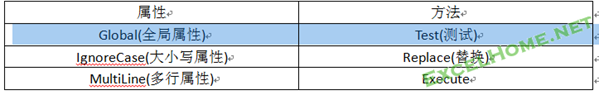
5.设置对象的其它属性
除Pattern属性外,正则对象还有其它三个属性，其属性值有False和True，默认值都是False。如果要使用默认属性，可以不用显示设置；如果要改变默认属性，则需要显示设置:
Global 当属性值为False时,只要在目标文本中,找到一个匹配时,即停止搜索。如果想要找出目标文本中的所有匹配，那么需要把它的属性值设置为True。
IgnoreCase 设置对英文字母大小写是否敏感。默认值False, 对大小写敏感；设置为True,忽略大小写.
MultiLine 它影响且只影响元字符^和$的意义。值为False，无论目标文本是多少行，整个文本中则只有一个开始位置，^表示第一行的开始；只有一个行结束位置，$表示文本末尾位置。值为True，那么，^和$分别表示每一行的行首和行尾位置。
下面来完成一个简单的任务，再具体认识各属性的使用方法：
有一两行的文本：
Aaa
Bbb
任务要求:
1.在文本开始和结束处,分别插入一个”@”符号;
2.在文本每行的开始和行尾分别插入”@”符号。
正则表达式：
^|$ 表示匹配行开始或结束位置
任务1代码:
Sub test1()
Dim reg, s$
s = "Aaa" & vbLf & "bbb" '这里用vblf 表示行之间的换行符
Set reg = CreateObject("vbscript.regexp")
reg.Pattern = "^|$"
reg.Global = True
s = reg.Replace(s, "@")
MsgBox s
End Sub
讨论:
Msgbox 最后显示的结果为:
@Aaa
Bbb@
代码中修改了global的默认属性值,设置为true；目的是保证能找到并替换全部的开始或结束位置。如果保持默认属性，则只会在开始处插入一个@号。
正则对象Reg的其它两个属性保持为默认。因为本任务无关乎字母大小问题，所以IgnoreCase属性无需要设置为Ture(当然如果设置为true,对最后结果也无影响);由于Mutiline属性保持默认,其值为False,所以整个文本只有一个开始位置和一个结束位置。
代码中使用了对象reg的replace方法,它的作用是,将在目标文本中找到的匹配（开始和结束位置）替换为”@”字符,在这里实际上是插入。然后把修改后的文本返回，重新赋值给字符变量S。
任务2代码：
Sub test2()
Dim reg, s$
s = "Aaa" & vbLf & "bbb"
Set reg = CreateObject("vbscript.regexp")
reg.Pattern = "^|$"
reg.Global = True
reg.MultiLine = True
s = reg.Replace(s, "@")
MsgBox s
End Sub
讨论:
任务2代码与任务1代码唯一区别是修改了mutiline默认属性,设置为True。这就意为着,该文本的每一行都存在一个开始位置和结束位置。所以Msgbox最后显示的结果为:
@Aaa@
@Baa@
6.应用对象的方法代码段
VBScirpt正则对象的方法共有三个：你可以根据任务要求选择使用一个或多个方法.
(1)TEST方法
语法:Object.Test(string)
Test方法只是简单测试目标文本中,是否包含正则表达式所描述的字符串。如果存在，则返回True,否则返回False。
例：用代码检测用户的输入是否是一个电子邮箱。
Sub ChkEmail()
Dim reg, s$
s = InputBox("请输入一个电子邮箱:")
Set reg = CreateObject("vbscript.regexp")
reg.Pattern = "^\S+@\S+$"
If reg.Test(s) Then
MsgBox "你输入的电子邮箱格式正确: " & s
Else
MsgBox "你输入的电子邮箱格式不正确!"
End If
End Sub
讨论:
代码从用户那里获得字符串,然后赋值与字符变量S。验证邮箱的正则表达式非常简略,元字符序列"\S"表示不是空格的任意一个字符,后面紧跟一个+号表示一个以上字符。这个表达式事实上只验证了用户的输入里，在字符串之间是否有一个@符号。它甚至认为”0@中”都是正确的。下面给出一个更为严格的电子邮箱正则表达式：“^[\w.-]+@[\w.-]+$”当然要严格按电子邮箱规范写出正则表达式，可能就十分复杂，由于我们刚刚接触正则，就不在详细讨论了。
这里要关注的是，test方法的语法，在方法与正则对象之间也是用英文点号隔开，作为参数，目标字符串用英文括号包围。在这个例子中，如果Test返回的是true，表示目标文本S中找到了正则模式的匹配。则显示正确结果,否则显示错误提示。
(2)Replace方法
替换在目标文本中用正则表达式查找到的字符串。
前面例子中语句体现其语法：s=reg.replace(s,”@”)
后面括号中的参数S,代表前面代码中设置的目标文本字符串.也就是正则表达式将要作用的目标文本.”@”是用来替换的字符串参数.前面的s是Replace方法返回的结果,它是目标文本被替换后的一个副本. 如果没有找到匹配的文本，将返回与目标文本一样的一个副本.
下面继续讨论Replace方法的第二个参数:
例子中"@"是一个字面字符，要用一对双引号包围起来。第二个参数还可以是变量、表达式。如果是变量或函数则不能用双引号包围,这一点和VBA代码规则是一致的.
上一章我们知道了如果在正则表达式中使用了元字符序列()括号，那么被圆括号包围的内容会存储在特殊变量$1中。在有些编程语言中，可以直接在正则代码外使用$1变量,而VBScript中可以并只可以在Replace方法中,作为第二参数来调用。
例子：在目标文本中的数字数据后增加上单位：KG
目标文本：“他们体重分别是：张三56，李四49，王五60。”
结果文本要求: “他们体重分别是：张三56KG，李四49KG，王五60KG。”
正则表达式：(\d+)
替换文本: $1KG
Sub testrep()
Dim reg, s$
s = "他们体重分别是：张三56，李四49，王五60。"
Set reg = CreateObject("vbscript.regexp")
reg.Pattern = "(\d+)"
reg.Global = True
s = reg.Replace(s, "$1KG")
MsgBox s
End Sub
讨论:
用正则表达式(\d+),Replace方法将在目标文本中找到三个匹配,其值分别是56,49,60。并分别把每个值保存于每一个匹配对象的$1变量中。
替换文本：”$1KG”表示每一个匹配中的$1变量值与字面字符”KG”联结,组成新字符串,用来替换找到的数据字符串。
$1是一个很特殊的变量,它由美元符号与数字编号组成.如果正则表达式中有两个或两个以上的捕获性括号,则按照左括号”(“从左到右顺序编号,自动命名为$1,$2,$3….,共支持99组.要指出的是,如果找到多个匹配,那么每个匹配中的特殊变量名是一样的.这个例中共有三个匹配其值分别为56,49,60.第一个匹配的变量名是$1,第二和第三个匹配的变量名仍然是$1,只是每个匹配中$1保存的值是不一样的.
最后一点,作为替换参数的一部分,$1变量与字面字符共同组成替换字符串时,它们之间不用 & 符号连接,并且 $1 必须放在一个双引号中;而如果是用其它普通变量与字面字符联结组成替换文本时,则必须用 & 符号联接,这一点与VBA代码使用方法相同.
在Replace方法的第二个参数中,还有几个很少用到的特殊变量:
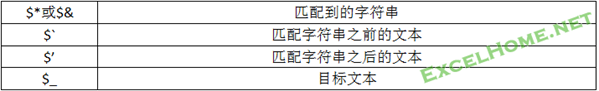
一个较特殊的状况,如果上面所述的特殊变量符不是作为变量使用,而是要以它们作为字面字符的替换文本,那么就要对它们转义,方法是在它们之前加一个美元符号$.如$$&
(3)Execute方法
在目标文本中执行正则表达式搜索。
语法:set mh=object.execute(s)
其中mh是用户自定的对象变量,S是值为目标文本的字符串变量.object是正则对象.
Execute方法会作用于目标文本(S),并返回一个叫作"Matches"的集合对象,在这里是mh.在这个集合对象中包含它找到的所有叫做"Match"的成功匹配对象(Matches集合最多可容纳65536个匹配对象). 如果未找到匹配，Execute 将返回空的 Matches 集合。Matches集合有两个只读属性:索引(Item)和成功匹配的次数(Count).
Matches集合中包含的匹配对象Match有四个只读属性:Value/firstindex/length/submatches
值得一提的是,Submatches属性是一个集合属性,集合中元素个数与正则表达式中使用的捕获性括号的个数相同,每个元素的值就是括号包围起来的内容.它也有两个只读属性:item和Count
下面用树状图来表示它们之间的关系,并在接下来的内容中继续逐一讨论它们的用法.
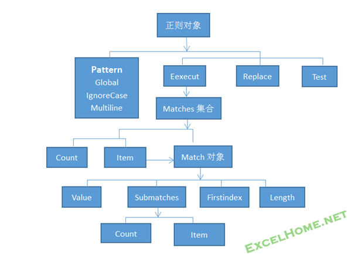
<1>Matches集合的Item和Count属性
利用Matches集合的Item属性可以得到它包含的每个Match对象;利用Count属性可以得到成功匹配的个数.
Matches集合对象中元素(成功匹配)的索引编号从0开始.我们可以用遍历集合的方式或索引方法读取每一个匹配值.
例:从一段文本中提取所有英文单词.
目标文本:”苹果:iphone_5s;诺基亚:Nokia_1020”
结果要求:分别提取出iphone_5s和Nokia_1020
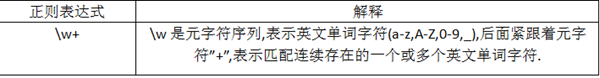
代码:
Sub test2()
Dim reg, k, mh, strA$
strA = "苹果:iphone_5s;诺基亚:Nokia_1020"
Set reg =CreateObject("vbscript.regexp")
reg.Pattern = "\w+"
reg.Global = True
Set mh = reg.Execute(strA)
For Each mhk In mh
Debug.Print mhk.value
Next
End Sub
讨论:
通过语句Set mh = reg.Execute(strA),Execute方法返回一个集合对象mh,在这个集合对象里包含两个匹配对象,代码中用遍历方法取出每一个匹配对象的值.
Execute方法返回的集合对象mh,有两个属性:
1)Count: Execute方法成功匹配的次数,也可理解为mh集合对象中包含的成功匹配对象的个数.语法:
N=mh.count 本例中n值为2
2)Item: 索引,可以通过索引值,返回集合对象中指定的匹配对象.语法:
Set mhk=mh.item(0)
K=mhk.value
用索引返回第一个Match对象即mhk. 本例中k为第一个Match对象的值(iphone_5s). 同样的方法可以得到第二匹配的值.
由于Item和Value属性是集合的默认属性,所以上面两个语句也可简写为:
K=mh(0)......第一个匹配对象的值(iphone_5s)
M=mh(1)...........第二个匹配对象的值(Nokia_1020)
上面代码中遍历集合也可以用索引法遍历:
For i=0 to mh.count-1 Debug.print mh(i).value Next i<2>Match对象的属性
Execute方法返回的集合对象中包含的也是对象元素,即match对象,match对象有四个属性:
FirstIndex：匹配对象所匹配字符串的起始位置。
Length：匹配对象所匹配字符串的字符长度。
SubMatches：匹配对象所匹配结果中的子项集合。
Value：匹配对象所匹配的值。
在本例中:索引为0,即第一个匹配对象的属性值为:
K=mh(0).value k的值为iphone_5s,value是默认属性可简写为k=mh(0)
sn=Mh(0).firsindex sn的值为3,表示在目标字符串中,位置3上找到该匹配iphone_5s.(位置是从0开始的)
Ln=mh(0).length ln值为9,即iphone_5s的字符长度
<3>Match对象的Submatches属性
匹配对象match的Submatches是一个集合属性,它包含正则表达式中用圆括号捕捉到的所有子匹配.它为用户提供了返回$1特殊变量值的方法.
集合Submatches有两个固有属性:Count和Item.可以通过Item得到集合中的每个值,它实际就是在正则表达式中用圆括号捕获的内容;Count值是集合中元素个数,实际上就是正则表达式中捕获性圆括号的个数.
下面给一个实例来说明:
目标文本:给定一个标准邮箱地址:J3721@163.com
要求:从邮箱中分别提取出:用户名j3721,服务器域名163.com
正则表达式: ^(\w+)@(.+)$
代码:
Sub test5()
Dim reg, mh, strA$, username$, domname$
strA = "J3721@163.com"
Set reg = CreateObject("vbscript.regexp")
reg.Pattern = "^(\w+)@(.+)$"
Set mh = reg.Execute(strA)
N=mh(0).submatches.count ‘n值等于2
username = mh(0).submatches(0) ‘j3721
domname = mh(0).submatches(1) ‘163.com
End Sub
讨论:
正则表达式中,\w+表示匹配@前面的所有英文单词字符;@后面的点号是一个元字符,表示匹配除换行符外的所有字符之一,后面紧跟+号,即”.+”表示匹配@后面除了换行符外的所有字符.用括号包围起来,用户名和域名就会自动分别保存在变量$1和$2中.
前面已经知道VBA不能在replace之外直接调用$1或$2,而这个例子告诉我们可以用match对象的submatches集合属性来提取.
在这个例子中,execute方法返回的集合对象mh中,mh中只有一个匹配对象Match,即mh(0);mh(0)对象的属性submatches(0),返回第一个括号中的内容,即j3721.而submatches(1),返回第二个括号中的内容.submathches集合也有count属性,所以如果有很多子项需要提取,也可用遍历或索引方法返回每一个特殊变量值.最后再给一例子:
下面的代码演示了如何从一个正则表达式获得一个 SubMatches 集合以及它的专有成员：
正则表达式(一个邮箱地址):
(\w+)@(\w+)\.(\w+)
如果你没有进一步了解元字符,可能不懂其中含义,不过没关系,在这里你只要知道,该代码的任务是显示电子邮箱dragon@xyzzy.com,用户名和组织名.
Function SubMatchTest(inpStr) Dim oRe, oMatch, oMatches Set oRe = New RegExp ' 查找一个电子邮件地址 oRe.Pattern = "(\w+)@(\w+)\.(\w+)" ' 得到 Matches 集合 Set oMatches = oRe.Execute(inpStr) ' 得到 Matches 集合中的第一项 Set oMatch = oMatches(0) ' 创建结果字符串。 ' Match 对象是完整匹配 — dragon@xyzzy.com retStr = "电子邮件地址是： " & oMatch & vbNewline ' 得到地址的子匹配部分。 retStr = retStr & "电子邮件别名是： " & oMatch.SubMatches(0) ' dragon retStr = retStr & vbNewline retStr = retStr & "组织是： " & oMatch. SubMatches(1) ' xyzzy SubMatchTest = retStr End Function Sub SubMatchesTest() MsgBox(SubMatchTest("请写信到 dragon@xyzzy.com 。 谢谢！")) End Sub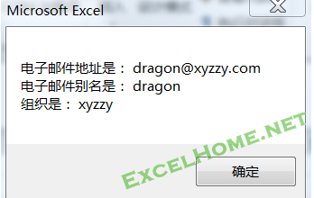
(前面第一篇的第一/二部分,概要阐述了正则表达式的基本思想,并对正则在VBA中的实现(也就是Regexp对象操作)作了详细讲解.接下来的第二至第六部分我们将集中介绍VBA中(本质上是Regexp对象中)可使用的全部元字符(序列),有的称为元字符的"特性",有的叫作正则"语法".反正它的基本属性就是用来描述字符的特殊字符.)
三.正则元字符----字符表示法
人类自然语言所用字符极其丰富多样,我们已经知道正则表达式是用元字符及它们的组合来描述这些字符以及这些字符组成的特定结构的.需要指出的是,正则没有统一标准,它是分流派的.在不同语言平台上(或同语言平台而版本不同),正则元字符的多少往往不同,同一元字符的特性也可能存在一定的差异.正是这个原因,在你参考各种正则资料的时候,尤其要注意这个问题.前面已经阐明,目前VBA平台上,用的是VBScript提供的正则对象,执行的是ECMA-262所规定的标准.
VBscript提供的元字符可方便地描述ASCII码表中的字符集.ASCII码表基本上包括了英文语系所用的所有字符.(如果你不熟悉,可以上网查查,大体上了解有哪些字符).也支持代码点不超过四位十六进制数的Unicode表的字符集.这解决了包括汉字在内的世界各国的官方文字的表示问题.为方便用户在不同环境下使用,同一字符往往有多种等价表示方法.
下面是对表示字符的元字符及序列的分类介绍:
(一)对于一些常用的不可打印字符,规定了专用的元字符序列
用正则表达式来描述一段字符串,即使它是看不见的,也必须毫无遗漏地表示出来.比如,空格,空白字符和一些不可打印字符,所以,在元字符(序列)中都有它们的表示方法.

(二)普通字符组:肯定字符组[a-z]及否定字符组[^a-z]
肯定字符组表示方括号内列出的任意一个字符.否定字符组是在左方括号后紧跟着一个脱字符”^”,表示匹配括号内未列出的任一字符.例:
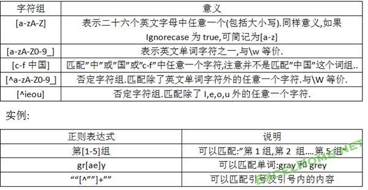
讨论:
1.如果字符范围在ASCII码表或Unicode字符表中是连续分布的,可以只用起止字符表示范围,中间用”-“连接.
2.用”-“连接的字符范围,前面必须是起点字符,如不能把[a-z]写为[z-a]
3.字符组内的字符顺序无关紧要,如[^ieou]与[^eiuo]是一个意思.
4.如果”-“字符中最左或最右位置,它表示匹配字面字符”-“.如[ieou-]
5.如果”^”没有紧跟在”[“之后,它也只表示字面字符”^”.
(三)字符组缩略表示法
对于一些常用的字符类,正则提供了简略表示法:
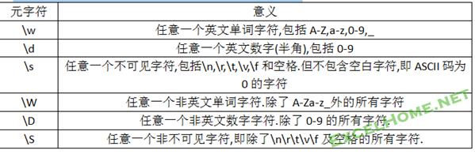
提示:肯定类字符缩略表示法,只能表示ASCII码表中的字符,而该表中的否定元字符序列,它们可以匹配文本中unicode字符.
实例:
正则表达式 \W\W\s\w\w\w
它表示匹配一个非单词字符,紧跟又是一个非单词字符,再是一个空格,最后连续三个单词字符.可以匹配:”正则 ABC”,”规则 1_3”等.
(四)几乎能匹配任何字符的元字符:英文句点
英文点号”.”可以匹配除换行符(\n)外的任意字符之一.它不限于ASCII码表中的字符,只要能显示于电脑上的字符都能匹配.在VBA中,英文句点等价于[^\n].
(五)控制字符表示法:\cChar
在ASCII码表中,十进制代码为1-26的字符全是控制字符,可以用”\c”连接字母A-Z之一来表示. 即\cA-\cZ分别表示代码为1-26的控制字符.如”\cM”,表示回车符.
(六)ASCII码表中字符的八进制转义表示法:\num
VBscript正则可用字符的八进制编码转义来表示ASCII字符:它的序列由反斜线和字符的八进制编码组成.例:
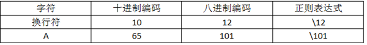
提示:八进制转义法表示字符范围:\0--\377,包括ASCII码表和扩展表中的256个字符.该表示法主要用于难以输入的字符.
(七)ASCII码表中字符的十六进制转义表示法: \xnum
一个小写的\X后跟两个大写十六进制数字可以匹配ASCII字符集中的一个字符.
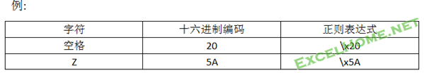
提示:可匹配范围\x00--\xFF,但一般用\x00--\x7F表示ASCII字符集中的前128个字符.\x80-\xFF(ASCII扩展码表字符),一般用Unicode代码点表示法替代.
(八)Unicode码表中字符的十六进制转义表示法:\unum
Unicode码一般用称之为代码点来表示一个字符.它是一个十六进制数.
正则表达式中,用“\u”序列后面紧跟字符unicode代码点(十六进制数)表示该字符.
例:
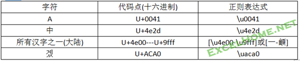
提示:
1.\unum表示法可表示代码点在U+0000--U+FFFF范围内的unicode字符.Unicode本身在发展中,已经出现超过4位的代码点,VBscript正则是不支持,但它们是很难遇到的字符.
2.用字符组[…]表示Unicode字符范围时,也可直接用表中起点字面字符与终点字面字符表示.比如大陆中文字符在Unicode表中,起始代码点是U+4e00,是表示中文字符”一”,终点代码点U+9fff,该代码点未定义,而”龥”字在终点附近,所以我们也可以用”[一-龥]”表示所有中文字之一.顺便提示一点,汉字在Unicode中的分布,基本无规律.不要想像"一",后面就是"二"等等.
3.有些流派的正则可以用Unicode的属性来方便表示不同类别的汉字或其它语言文字,但VBscript 5.5是不支持的.
(九)元字符字面字符表示法:转义符”\”
正则表达式用了一部分字符作为元字符,那么怎样在正则表达式中表示这些元字符的字面字符呢?它提供了一个称为转义元字符,即反斜杠来表示.例:表示字面点号可用”\.”;表示反斜杠的字面字符,用”\\”表示.下面列举了如果匹配字面字符必须转义的元字符:

提示:
1.注意并没有包括”]”,”-“,和”}”;
2.普通字符组[…]内部,元字符的转义有自己的规则,在下一章专门介绍.
例:正则表达式:
\d\.\d
可以匹配0.2,3.1….等小数.
(十)引用前面括号捕获的文本－－反向引用
正则中，用形如\1,\2…的元字符序列表示前面捕获性括号内的字串(块),”\1”叫反向引用.如:
(abc)\1
可以匹配目标文本:abcabc,这里\1实际引用的是它左边括号中的内容”abc”.
(abc)(defg)\2
可以匹配目标文本:abcdefgdefg ,这里\2指的是从左至右第二个括号中的内容.
实例:删除一段英文中重复的单词.
目标文本:This this Is is an example.
结果文本:this is an example
正则表达式:
(\w+)\s+\1
代码:
Sub testrep()
Dim reg, s$
s = "This this is Is an exmapl"
Set reg =CreateObject("vbscript.regexp")
reg.Pattern = "(\w+)\s+\1"
reg.Global = True
reg.IgnoreCase = True
s = reg.Replace(s, "$1")
MsgBox s
End Sub
讨论:
正则表达式中,”\w+”表示匹配连续出现的单词字符.在本例中,它会匹配至空格为止;”\s+”匹配一个或多个空格; “\1”它会匹配左边第一个出现的括号中的相同内容.所以,该正则会匹配诸如”1 1” “1111 1111”之类的文本.
代码中Global属性设置为True,表示搜索所有匹配;IgnoreCase属性设置为True,表示忽略大小写,如”this” 与”THIS”视为同一单词.
代码使用了正则对象的Repalce方法,用$1替换找到的匹配. 这个例中,共找到两个匹配”This this”与”Is is”;而$1在前面已经说过它保存的是第一个捕获性括号内的内容.在本例中分别是This与Is.最终通过替换实现了删除重复单词的目的.
在VBA中使用反向引用要注意:
1. 是表示八进制转义的字符还是反向引用?
细心朋友已经发现,反向引用与字符的八制转义表示法,其结构是一样的.那么怎样区分它们呢?其规则是:
“\num”:假如num是一个可以看作八进制的数字.
如果num的值大于正则左前边捕获性括号个数,那么,它是一个八进制转义符;
如果num的值小于或等于正则左前边捕获性括号个数,那么,它是一个反向引用;
显然,如果它左前边没有捕获性括号,那么,它肯定是一个八进制转义符了.如果num数字中含有超过8,或9的数字,那么,它一定是反向引用.
2. \1,\2,…编号是根据前面”左半圆括号”从左至右出现的顺序确定的.
四.正则元字符----字符(串)连续出现次数表示法
上一章介绍表示字符的元字符或序列都只代表一个字符.要表示连续多个字符,正则表达式提供了下表中的元字符(序列):
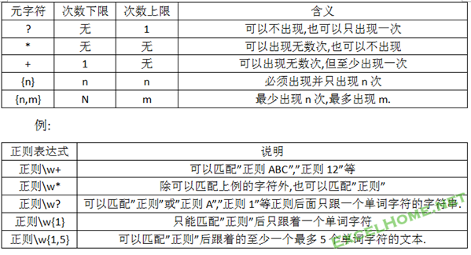
讨论:
1.这些元字符(序列)叫”量词”,它作用于它前面紧挨的字符或字符串.作用的范围:可用()标示.如果没有(),那么它只作用前面紧挨的一个字符;如果要作用它前面多个字符,必须用()标明范围.例:
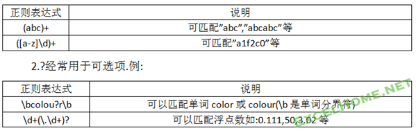
3.慎用可选项量词
显然,上例中浮点数的正则不能匹配这样表示的浮点数如:”.123”.可能你已经想到用下列表达式了:
\d*(\.\d+)?
的确它能匹配所有形式的浮点数了.但是由于表达式中整数部分与小数部分都是可选的,这意谓着什么也不匹配,也能匹配成功.也就是说无论目标文本是空字符还是任意字符(串),正则引擎都会报告匹配成功(不过匹配结果都是空值).
4.它们都是贪婪量词,即总是尝试匹配尽可能多的字符.比如:可选项量词"?" 它的下限是0即不匹配,上限是1. 如果有符合要求的字符(串),它则选择匹配一个字符(串),不会选择不匹配.
例:正则表达式
.*
它总是匹配一行中换行符前所有的文本.
实例:提取科室名
目标文本:
姓名:张三 科室:人事科(科长)
姓名:李四 科室:保卫科(干事)
正则表达式:
科室:(.*)
代码:
Sub testname()
Dim reg, mh, s$
s = "姓名:张三 科室:人事科(科长)" & vbCrLf & "姓名:李四 科室:保卫科(干事)"
Set reg =CreateObject("vbscript.regexp")
reg.Pattern = "科室:(.*)"
reg.Global = True
Set mh = reg.Execute(s)
MsgBox mh(0).SubMatches(0)
MsgBox mh(1).SubMatches(0)
End Sub
讨论:
当用"科室:(.*)"去匹配文本时,在第一行成功匹配到:"科室:"后,正则的(.*)部分将依次匹配到后面跟着的所有字符,直到英文句点不能匹配的换行符.所以括号捕获到的内容是:人事科(科长).
而Global属性设置为true,表示找到第一个匹配后,只要还有文本没有尝试,那么,它将继续找出其它所有匹配结果. 在这个例子,找到两个匹配分别为mh(0)和mh(1). 其科室名即括号捕获的内容分别保存在这两个匹配的特殊变量$1中,VBA可以利用Match对象的submatches属性提取它们.(提示:如果不明白代码意思,请回到第一篇第二章查阅)
五.正则元字符—-字符(串)位置表示法
正则提供了一些表示位置元字符(序列),它可以锚定特定字符(串),有时使用它们可以提高匹配效率.除了前面介绍的^和$外,还有:
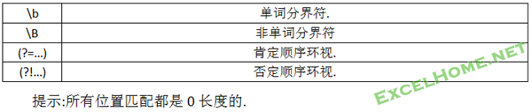
(一)单词分界符\b
在英文环境中,匹配一个字边界，即字与空格间的位置。例如，“er\b”匹配“never”中的“er”，但不匹配“verb”中的“er”。
它匹配这样一个位置:该位置一边是英文单词字符,另一边不是.也可以理解为该位置两边的字符,其中一个可以被\w匹配,另一个字符则可被\W匹配.所以在英文环境中,可匹配四种位置 (本文中英文单词字符指[a-zA-Z0-9_]):
1) 在字符串的第一个字符前的位置(如果字符串的第一个字符是一个“单词字符”)
2) 在字符串的最后一个字符后的位置(如果字符串的最后一个字符是一个“单词字符”)
3) 在一个“单词字符”和“非单词字符”之间，其中“非单词字符”紧跟在“单词字符”之后
4) 在一个“非单词字符”和“单词字符”之间，其中“单词字符”紧跟在“非单词字符”后面
下面这个例子可让你明白单词分界符的用途:
目标文本:He captured a catfish for his cat
正则表达式1:
cat
正则表达式2:
\bcat\b
任务要求:用字符串fat,替换文本中的cat.
代码:
sub test()
dim s$
with createobject("vbscript.regexp")
.pattern="cat" '分别用上面两个表达式测试
.global=true
s=.replace("He captured a catfish for his cat","fat")
end with
msgbox s
end sub
你能分析结果差异的原因吗?
(二)非单词边界\B
非字边界匹配。“er\B”匹配“verb”中的“er”，但不匹配“never”中的“er”。
它是\b取反.\B总是匹配两个同时被\w或\W匹配的字符之间的位置.它匹配下列位置:
1)在目标文本的第一个字符之前如果第一个字符不是单词字符;
2)在目标文本的最后一个字符之后,如果最后一个字符不单词字符;
3)在两个单词字符之间;
4)在两个非单词符之间;
5)空串
在非英文环境中,没有单词边界;全部是非单词边界.所以应用范围很窄.
(三)肯定顺序环视与否定顺序环视
以一个实例来讨论:
1) (?=98)
2) (?!98)
第一个是肯定环视,表示子字符串”98”前面的位置;第二个是否定环视,表示不是子字符串”98”的位置.
例:
目标文本:”window97升级为window98”
如果把它们作为正则表达式作用于该文本,则该文本中只有”98”前一个位置上才能被(?=98)匹配;除这个位置外,其它所有位置都可以被(?!98)匹配.它的工作原理是:
在每个位置上查找该位置后是否跟着一个字符9,再然后再跟着一个字符8.如果是,则(?=98)报告匹配成功,(?!98)报告匹配失败;反之,(?=98)报告失败,(?!98)报告成功.
利用它们可以锚定特定字符串,如:正则表达式
Window(?=98)
表示匹配后面跟着字符串”98”的字符串”window”.如果用它作用于上面目标文本,那么它只能匹配window98前面的”window”.
而正则表达式:
Window(?!=98)
表示匹配后面没有跟着字符串”98”的字符串”window”.如果用它作用上面目标文本,那么它它只能匹配widow97前面的”window”
环视只是简单地测试其中子表达式能否在当前位置匹配后面的文本.无论是什么样的结果,它都不会”占有”被测试的文本.例:
目标文本:”正则ABC”
正则:(?!=\W+).{2}
代码:
Sub test()
Dim re,mh,s$
S=”正则ABC”
With createobject(“vbscript.regexp”)
.pattern=”(?=\W+).{2}”
Set mh=.Execute(s)
End with
For each k in mh
Debug.print k ' “正则”
next
End sub
讨论:
匹配结果是:”正则”.我们来分析一下匹配过程:
在文本的开始位置,正则引擎首先尝试(?!=\W+),即检查该位置后面有无一个或一个以上的非英文单词字符.结果它找到"正则"二个字符是非英文字符,引擎报告第一个子表达式匹配成功;接着尝试第二个子表达式:”.{2}”,即匹配两个任意字符,这两个字符就是”正则”.正则表达式中子表达式尝试完毕,最后报告成功而结束.
我们看到(?!=\W+),并没有”消耗”掉”正则”字符串,如果消耗了,那么结果应该是”AB”.
最后要指出一点的是:虽然环视表达式中有圆括号,但它是非捕获性的.并且圆括号与?、!或=是一个不可分割的整体.
(二)捕获性括号(…)与非捕获性括号(?:…).
1.捕获型括号(….)
前面已经多次遇见过捕获性括号”(…)”, 总结前面使用圆括号有二个理由:
1) 分组,标明量词的作用范围.或限制多选结构,标明选择符”|”的作用范围.
例:一文本中,有多行文本,提取行全部以”AA”开头的连续3行.
正则表达式:
(^AA.*\n){3}
^AA 锁定行特征,即行开始处有字符AA;
.* 匹配行中其它字符至换行符,英文句点”.”是不能匹配换行符的;
\n 匹配换行符;
^AA.*\n 匹配一个完整行;
(^AA.*\n){3} 用()分组标明后面量词{3}的作用范围,即行重复3次.
2) 捕获文本,将括号内容的内容保存在特殊变量中.
在VBA中,捕获性括号保存的内容有三种方式引用:
(1) 在Replace方法中通过$1,$2…方式引用;
(2) 在正则表达式中,通过\1,\2…方式引用.
(3) 可以用匹配对象的Submatches集合索引号提取其内容.
3) 关于重复分组
如果在分组的结束之后放一个量词,那么整个分组就会被重复.如(abc){3}与abcabcabc是相同的.
那么最后捕获性括号捕获的内容是什么呢?
例:正则表达式
(\d\d){1,3}
目标文本:123456
最后匹配结果是123456.$1的值,即捕获性括号捕获到的内容是56.你可以编制代码测试,用submatches属性提取该值验证.得到这个结果的原因是:
分组的匹配在每次引擎退出该分组的时候被捕获,并会覆盖该分组在之前匹配的任何文本.(\d\d){1,3}会匹配一个包含2个,4个或6个数字的字符串.引擎会退出该分组3次.当这个正则表达式匹配到123456的时候,捕获分组中保存的是56,因为该分组的最后一次循环存储的是56.另外两次匹配12和34被覆盖了.
2.非捕获型括号(?:…)
捕获性括号保存内容时,是会付出处理成本的.所以,如果只需要让它起分组作用,而不必保存之中内容.正则表达式提供了一个非捕获性括号的字符序列:(?:….),在形式上比捕获性括号多一个”?:”,并紧跟在左括号之后,它们是一个整体.
例:
(?:中国|China)
(?:.*)
使用非捕获性括号可提高一定的匹配效率,特别是在使用循环的时候.
再次指出的是,虽然环视中也有圆括号,但在那里是非捕获性的.
(三)抑制量词的贪婪性: ?
前面已经知道,所有量词都是贪婪的,或称之为匹配优先的.他们总是匹配尽可能多的字符.下面例子可以了解什么是贪婪:
目标文本:“This is a <EM>first</EM> test”
要求:匹配提取标签<EM>或</EM>
正则表达式:
<.*>
代码:
Sub test()
Dim mh, s$
s = "This is a<EM>first</EM> test"
WithCreateObject("vbscript.regexp")
.Pattern = "<.*>"
.Global = True
Set mh = .Execute(s)
End With
MsgBox mh(0)
End Sub
讨论:
在正则表达式中,使用了量词"*".它表示可匹配0个或多个字符.执行该代码结果显示:<EM>first</EM>.为什么不是我们希望的<EM>或</EM >结果呢?下面分析它的匹配过程:
当用正则表达式"<.*>"作用于目标文本时,首先用"<"去目标文本中尝试,结果在"标签"后面找到了"<";紧接着开始在下一个位置尝试”.*”,"."可匹配任意非换行符,"*"可以表示可以连续0次或多次.由于量词"*"匹配是匹配优先的,当匹配模式”.*”时,它会匹配至行的末尾,直到遇到换行符为止.下来该尝试表达式中的">"了,结果余下的字符是换行符,不能匹配字符”>”,在此匹配失败;
在原理中我们会讲到,这时引擎会回退,直至回退到右边第一次出现”>”字符,匹配成功.最后报告成功匹配结果:<EM>first</EM>
为了解决这类问题,正则引入了一个元字符”?”,将它紧跟在量词之后,如”.*?”,则可抑制量词的贪婪性.让它变成忽略优先量词.忽略优先量词总是匹配尽可少的字符
同上例,正则表达式修改为:
<.*?>
其它代码不变,最后结果显示:<EM>,得到了我们希望的结果.(提示:从效率上看,本例用正则表达式”<[^>]*>”效率更高.其原因会在”原理篇”中会谈到)
上面的例子告诉我们,在匹配优先的量词后,紧跟一个”?”,则变成了”忽略优先量词”.它们总是匹配尽可少的字符.再举一例,在字符串“oooo”中，“o+?”只匹配单个“o”，而“o+”匹配所有“o”
如果你已经读到了这里,那么恭喜你.你应该有很厚的正则功底了.
尽管现在的你可以用正则来处理一些文本工作,但难免给人以”花架子”的印象.因为也许你用正则完成的任务,远不如用VBA自身函数或方法处理来得简洁快速.正则是用来处理,VBA难以为任的工作.所以,你需要进一步深入下去.